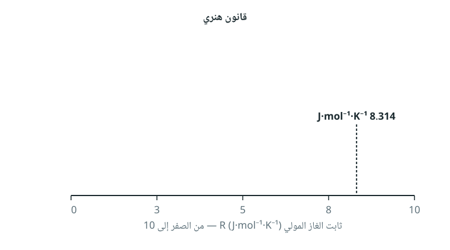

قانون هنري
Henry's law
قانون هنري ينص على أن كمية غاز مذاب في سائل عند التوازن تتناسب طردياً مع ضغطه الجزئي فوق السائل، وثابت التناسب ثابت هنري الذي يعتمد على الغاز والمذيب ودرجة الحرارة.
قانون هنري يصف ذوبان غاز في سائل عند التوازن: التركيز المولي للغاز المذاب يتناسب طردياً مع ضغطه الجزئي في الطور الغازي فوق السائل، c = k_H·p. وثابت هنري k_H خاص بكل زوج من غاز ومذيب، ويتناقص بزيادة درجة الحرارة لأن الذوبان طارد للحرارة في معظم الحالات. القانون صالح للمحاليل المخففة حيث لا تتفاعل جزيئات الغاز مع بعضها في السائل. مثال: ذوبان الأكسجين في الماء عند 25 °م له ثابت هنري نحو 1.3×10⁻³ mol/(L·atm)، فتحت ضغط جزئي 0.21 atm من الهواء يبلغ التركيز نحو 2.7×10⁻⁴ mol/L، وهو ما يكفي لحياة الأسماك.
كيف تعمل الظاهرة؟
الذوبان عملية توازن ديناميكي بين طورين: جزيئات الغاز تدخل السائل وتخرج منه بالمعدل نفسه عند التوازن. معدل الدخول يتناسب مع عدد تصادمات جزيئات الغاز بسطح السائل، وهو متناسب مع ضغطه الجزئي. ومعدل الخروج يتناسب مع عدد الجزيئات المذابة القريبة من السطح، أي مع تركيزها. وعند التساوي ينتج أن التركيز يتناسب مع الضغط. هذا هو أصل القانون: هو شرط تساوي معدلين، لا علاقة كتلية. ولذلك يتناقص الذوبان بالحرارة في معظم الغازات: الذوبان يطلق حرارة لأن ترتيب الجزيئات المذابة يقلل الإنتروبيا، ورفع الحرارة يزيح التوازن نحو الطور الغازي وفق مبدأ لوشاتلييه.
العلاقة بالأرقام
c = k_H·p، وk_H بوحدة mol·L⁻¹·atm⁻¹ أو mol·m⁻³·Pa⁻¹. والعلاقة بالكسر المولي: p = H·x، حيث H ثابت هنري بالضغط وx الكسر المولي للمذاب. والعلاقة بالحرارة (صيغة فانت هوف): ln(k_H(T₂)/k_H(T₁)) = −ΔH_sol/R·(1/T₂ − 1/T₁). مثال عددي: عند 25 °م وk_H = 1.3×10⁻³ mol/(L·atm)، ضغط جزئي 0.21 atm يعطي 2.7×10⁻⁴ mol/L؛ وبالتحويل إلى mol/kg باستعمال كثافة الماء 997.00 kg/m³: 2.7×10⁻⁴ mol/L ÷ 0.997 kg/L = 2.7×10⁻⁴ mol/kg.
مفاهيم متقاربة
يُفرَّق بين قانون هنري وقانون راؤول بدقة: كلاهما حالة حدية من شرط التوازن بين طورين، لكن راؤول يصف المكوّن الغالب في السائل (المذيب) عند اقتراب كسره المولي من الواحد، وهنري يصف المكوّن المخفف (المذاب) عند اقتراب كسره المولي من الصفر. ويُفرَّق كذلك بين ثابت هنري بالتركيز المولي وبالكسر المولي: الرقمان مختلفان ووحدتاهما مختلفتان، والخلط بينهما خطأ مقداري شائع. والذوبان الفيزيائي الذي يصفه هنري ليس الذوبان الكيميائي: غاز يتفاعل مع المذيب، كـCO₂ في الماء حيث يتكوّن حمض الكربونيك، لا يتبع هنري بسيطاً بل يتبع علاقة تتضمن ثوابت التفاعل.
حدود التطبيق
القانون صالح للمحاليل المخففة حيث لا تتفاعل جزيئات المذاب مع بعضها. عند التراكيز العالية تنحرف العلاقة عن الخطية لأن معامل النشاط يتغير، ويُستعمل النشاط بدل التركيز. ولا ينطبق حين يتفاعل الغاز كيميائياً مع المذيب، كما في NH₃ في الماء أو CO₂ في الماء القاعدي، لأن كمية الغاز المذاب لا تساوي كمية الغاز الحر. ولا ينطبق على الغازات التي تتأين أو تتفكك في المحلول. كذلك لا يصف القانون حركية الذوبان بل توازنه فقط: يقول كم يُذاب في النهاية، لا كم يستغرق ذلك، وهو ما تصفه نظرية الانتقال الكتلي بمعاملات انتقال مختلفة.

| الكمية | القيمة | المصدر |
|---|---|---|
| كثافة الماء السائل عند 25 °م | 997.00 kg/m³ | [2] |
| تركيز الأكسجين المذاب تحت 0.21 atm عند 25 °م | 2.7×10⁻⁴ mol/L | [1] |
المصادر
- 1 CODATA Value: molar gas constant — NIST — CODATA 2022 recommended values (2024). physics.nist.gov/cgi-bin/cuu/Value?r · اطُّلع عليه 2026-11-21
- 2 NISTIR 5078 — Thermodynamic Properties of Water, 0 to 374 C and Pressures to 100 MPa (IAPWS-95 tabulation) — NIST — National Institute of Standards and Technology (1998). www.nist.gov/publications/thermodynamic-properties-water-temperatures-0-374-c-and-pressures-100-mpa · اطُّلع عليه 2026-11-21
- 3 The International System of Units (SI), 9th edition (2019) — BIPM — Bureau International des Poids et Mesures (2019). www.bipm.org/en/publications/si-brochure · اطُّلع عليه 2026-11-21
استشهد بهذا المصطلح
الصيغتان مبنيتان من بيانات الصفحة نفسها: العنوان والتاريخ ورابط النسخة المنشورة.
قانون هنري — Henry's law. (2026). ديوان المعرفة — انفراد. https://infiradev.com/diwan/terms/term-henry-law.html
@misc{term-henry-law2026,
title = {قانون هنري},
titleaddon = {Henry's law},
howpublished = {{ديوان المعرفة — انفراد} — مرجع علمي عربي},
year = {2026},
url = {https://infiradev.com/diwan/terms/term-henry-law.html},
urldate = {2026-11-26},
note = {مراجعة علمية: hermes (مراجعة معتمدة 2026-11-26)}
}
راجعه: hermes (مراجعة معتمدة 2026-11-26) · 2026-11-26 · آخر تحديث 2026-11-21